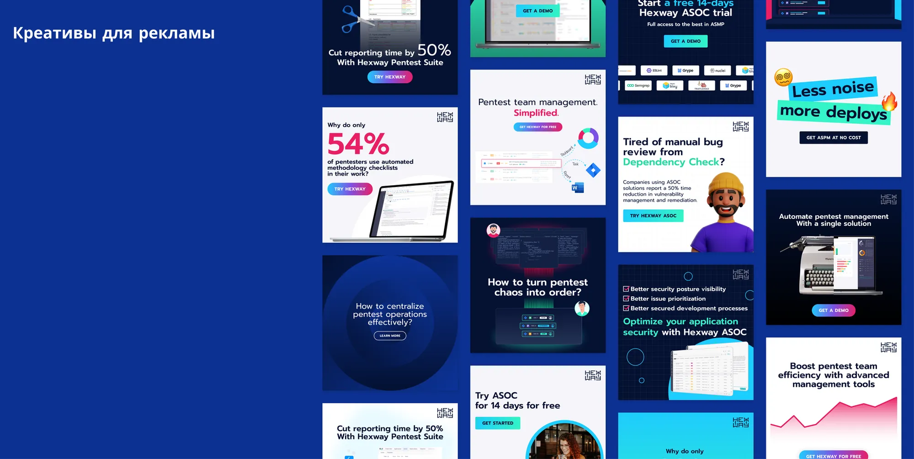
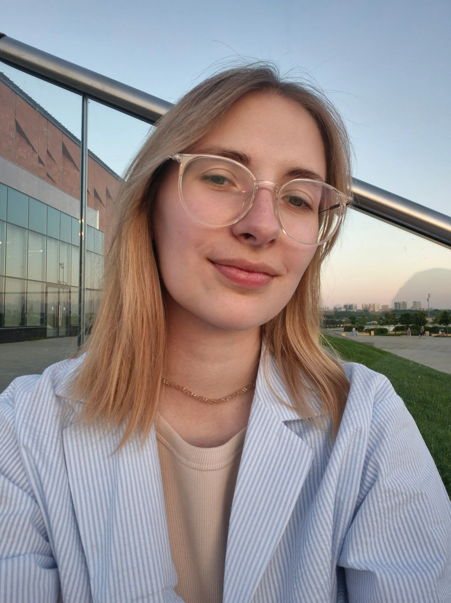

Выстраиваю связь между всеми формами бренда.
Коммуникационный дизайнер. Сайты, промо и графический дизайн, брендинг.
Привет! У меня есть опыт работы фрилансером и штатным дизайнером в компаниях: Яндекс.Практикум, Ancor, Just AI, Digital Security, Solisoft.
Мне важно выстраивать связь между всеми формами бренда, вызывать эмоции у конечного пользователя и работать на постоянное улучшение чего-то существующего.

Постоянно слежу за новыми тенденциями в дизайне и проектировании. Читаю каналы: Фичизм, Адовый UX, Поясни за UX, UX Notes, Визуальные приёмы, Now How Channel.
Всегда готова получать новый опыт и легко осваиваю новые программы. Хорошо понимаю, как устроен фронтенд: HTML5, CSS, JS, TS.
Рассматриваю удалённую работу, а также офис в Петербурге.
Область экспертизы
- → Сайты
- → Промо и графический дизайн
- → Брендинг
Hard skills
Визуальная коммуникация
Использую принципы графического дизайна, чтобы визуальные элементы эффективно передавали информацию.
Работа в Figma
Быстро создаю вайрфреймы и интерактивные прототипы. В работе использую сложные Auto Layout, components, constraints, styles, plugins, grids.
Передача в разработку
UI-kit, Material Design, дизайн-система, логика и понятная иерархия рабочего файла, нейминг, основы HTML/CSS.
Soft skills
Эмпатия и коммуникация
Умею работать в команде, давать и получать обратную связь, слушать, спрашивать, аргументировать, смотреть на проблему с разных сторон и предлагать новые идеи.
Отношение к критике
Спокойно отношусь к критике, умею признавать, анализировать и исправлять свои ошибки. Умею поставить себя на место пользователя.
Развитие и обучение
Здоровое чувство перфекционизма. Быстро осваиваю новые знания и навыки, постоянно читаю и учусь сама.
Не боюсь задавать вопросы. Худший вопрос — тот, который ты не задал.
В дизайне с 2020 года